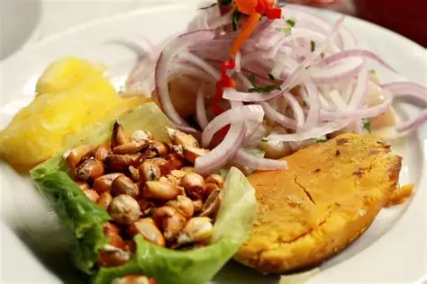
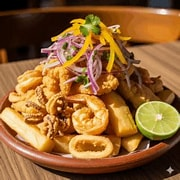
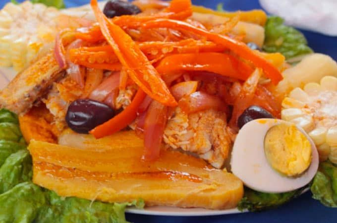

Sabores de nuestra región
La gastronomía de Nuevo Chimbote no solo se limita a los alimentos del mar. También se pueden encontrar platos criollos, sopas, guisos y preparaciones tradicionales de otras regiones del Perú, debido a la diversidad de costumbres de las familias que viven en esta localidad. Esta variedad permite que los visitantes disfruten de diferentes sabores y conozcan las preferencias culinarias de sus habitantes.
Además, la actividad gastronómica contribuye a la economía local, ya que genera oportunidades de trabajo para pescadores, comerciantes, cocineros y propietarios de restaurantes. La compra y venta de productos frescos favorece el comercio y permite que muchas familias obtengan ingresos mediante la preparación y comercialización de alimentos.
Finalmente, la gastronomía de Nuevo Chimbote representa una combinación de tradición, productos marinos y costumbres peruanas. Sus platos permiten compartir momentos familiares, recibir a los visitantes y conservar las tradiciones culinarias de la costa de Áncash. Por ello, es importante valorar la cocina local, consumir alimentos en establecimientos limpios y promover el uso responsable de los recursos marinos para que esta riqueza gastronómica continúe formando parte de la identidad de Nuevo Chimbote.
|
Ceviche

El ceviche es uno de los platos más representativos de la gastronomía peruana y es muy apreciado en Nuevo Chimbote, ubicado en la región Áncash. Debido a su cercanía al océano Pacífico, en esta zona existe una importante tradición de consumo de pescados y productos marinos, que son ingredientes fundamentales para preparar diferentes platos.
Este delicioso alimento se prepara principalmente con pescado fresco cortado en trozos, jugo de limón, cebolla, ají y sal. Según la preparación, puede acompañarse con camote, choclo, cancha y hojas de lechuga. La combinación de sus ingredientes le proporciona un sabor fresco, ligeramente ácido y picante, que lo convierte en una comida muy popular entre los habitantes y visitantes.
En Nuevo Chimbote, el ceviche se puede disfrutar en restaurantes, cevicherías y establecimientos de comida marina. Es una opción frecuente para compartir durante los almuerzos familiares, las reuniones con amigos y las visitas turísticas. Además, su preparación está relacionada con el trabajo de los pescadores y comerciantes que participan en la distribución de los productos del mar.
|
Jalea

La jalea es uno de los platos marinos más apreciados en la costa peruana y forma parte de las opciones gastronómicas que se pueden disfrutar en Nuevo Chimbote, región Áncash. Es una preparación conocida por su sabor, su textura crujiente y la combinación de pescados y mariscos fritos, acompañados de diferentes ingredientes tradicionales.
Este plato se prepara generalmente con trozos de pescado sazonados y fritos hasta quedar dorados y crujientes. En la jalea mixta también se pueden incluir calamares, langostinos y otros productos marinos. Habitualmente se sirve con yuca frita o sancochada, salsa criolla elaborada con cebolla y limón, además de salsas que complementan su sabor.
En Nuevo Chimbote, la jalea puede encontrarse en restaurantes y establecimientos especializados en comida marina. Es una alternativa popular para compartir durante los almuerzos familiares, las reuniones con amigos y las visitas a la ciudad. Su preparación está relacionada con la disponibilidad de productos del mar y con la tradición culinaria de las localidades costeras de Áncash.
|
Causa de pescado

La causa de pescado es uno de los platos más deliciosos y representativos de la gastronomía peruana. Se caracteriza por su sabor fresco, su textura suave y la combinación de ingredientes tradicionales que forman parte de la cocina del Perú. Este plato se prepara principalmente con papa amarilla sancochada y prensada, ají amarillo, limón, aceite y sal, ingredientes que se mezclan hasta obtener una masa suave, de color amarillo y con un sabor ligeramente ácido y picante.
Para preparar la causa de pescado, primero se cocinan las papas y se prensan hasta formar una masa sin grumos. Luego se agregan el ají amarillo molido, el jugo de limón, un poco de aceite y sal al gusto. Todos estos ingredientes se mezclan cuidadosamente para conseguir una masa uniforme y sabrosa. Por otro lado, se prepara el pescado, que puede ser cocido o frito, dependiendo de la receta y de las preferencias de cada persona. El pescado se sazona con los ingredientes necesarios y se combina con otros alimentos, como cebolla, mayonesa o verduras, para darle más sabor al relleno.
|